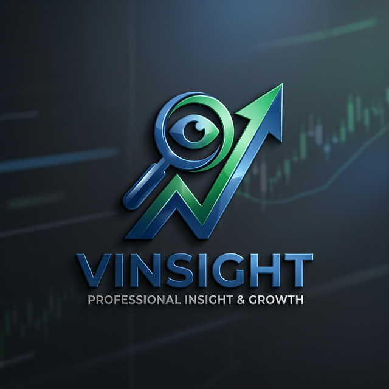
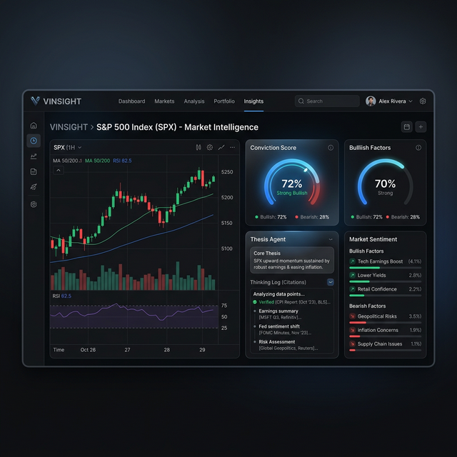

Vinsight Intelligence Platform
Autonomous Thesis Guarding for High-Conviction Investing
- Team 1: Vinayak Malhotra, Abhisek, LJ, Joel
- Site: www.vinsights.page
- Git: github.com/vinayakm-93/vinsight
The Business Problem
Investors are drowning in "Signal Toxicity."
- Analysts spend 80% of time reading, 20% deciding.
- Information overload leads to research friction.
- Confirmation Bias blinds even professional investors.
The Hero: Thesis Agent
Our flagship autonomous guardian service.
- Autonomous Watchdog: 24/7 pressure-testing of investment ideas.
- Counter-Bias Engineering: Designed to falsify, not just confirm.
- Evidence-Grounded: Verifiable citations from SEC & news.

Premium AI Suite
The intelligence layer powering the Agent.
- Sentiment Service: FinBERT-based high-fidelity analysis.
- Earnings AI: Automated tone & Q&A extraction.
- Scoring Engine: Deterministic Python-based 5-component math.
- Monte Carlo: Probabilistic risk modeling (5,000 paths).
Technical Architecture
graph TD
User([User]) --> WebUI[Next.js Dashboard]
WebUI --> API[FastAPI Gateway]
subgraph Core_Service [Thesis Agent Orchestrator]
Agent[Thesis Agent Loop]
end
subgraph AI_Suite [Vinsight AI Suite]
Scorer[Deterministic Scorer]
Sentiment[FinBERT Sentiment]
Earnings[Transcript AI]
Monte[Monte Carlo Sim]
end
Agent --> API
API --> AI_Suite
Agent --> LLM[Gemini 1.5 Pro]
Agentic Logic & Grounding
- Iterative Research: Plan → Search → Reflect loop.
- Evidence Grounding: Mandatory 30% semantic match for assertions.
- Zero Hallucination: [UNVERIFIED] tags for unbacked claims.
The Scoring Engine
Ruthless Objectivity via Python Determinism.
- 5-Component Base: Valuation, Health, Growth, Profit, Technicals.
- The Analyst's Veto: Hard-caps for insolvency outliers.
- Buffer + Gradient: Penalties that ignore market jitter.
Demo: Evaluating "Long TSLA"
- Thesis: "Going long on FSD dominance."
- Agent Action: Scrapes latest 10-K and safety recalls.
- Verdict: AT RISK (Regulatory hurdles prioritized).
Impact & Next Steps
Decisions backed by evidence, not emotion.
- Reduce research friction by 80%.
- Institutional-grade risk metrics for retail.
- Next: Transactional 2FA "Verified Orders."
Summary: Vinsight
- Hero: The Thesis Agent (Autonomous Guardian).
- Engine: Vinsight AI Suite (High-Fidelity Suite).
- Site: www.vinsights.page
- Git: github.com/vinayakm-93/vinsight
Questions?